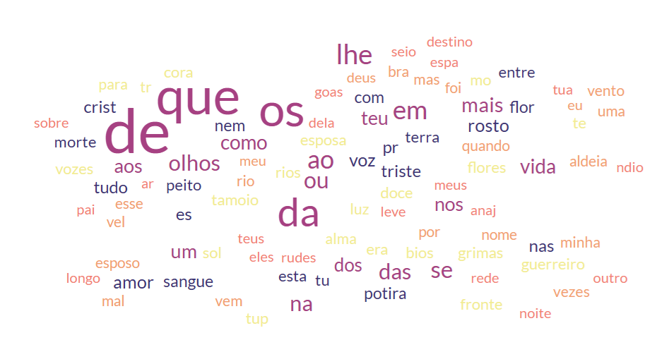
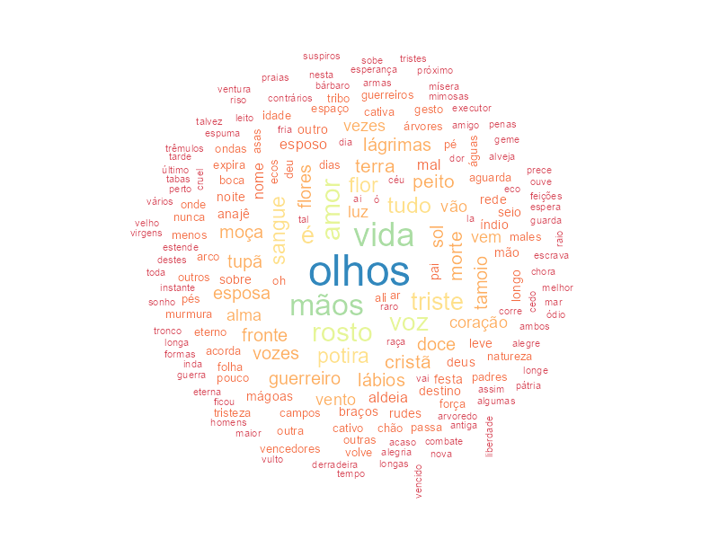
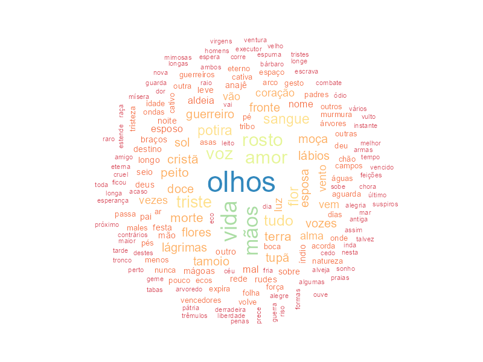
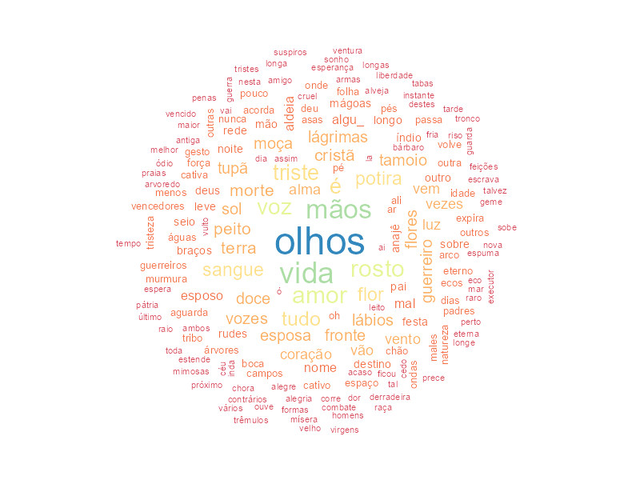
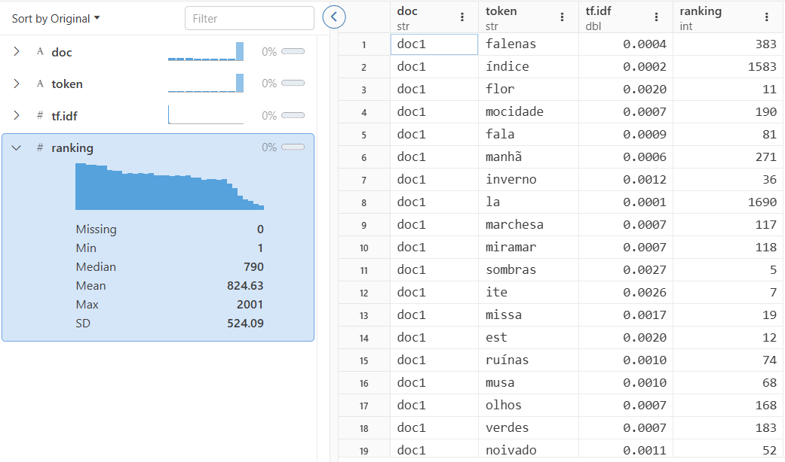
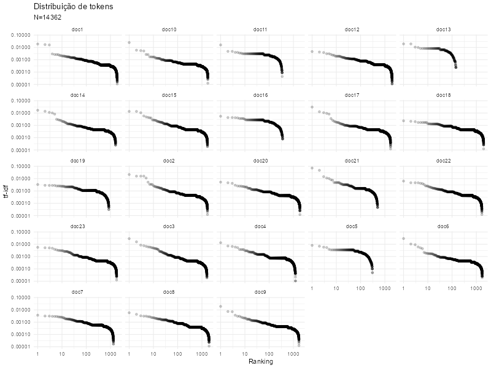
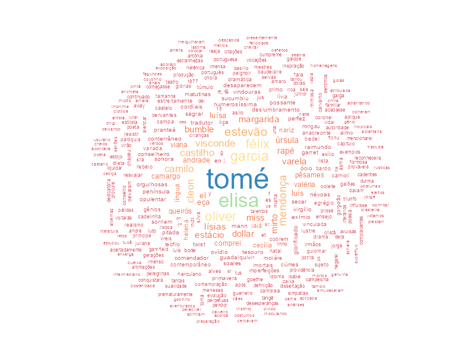
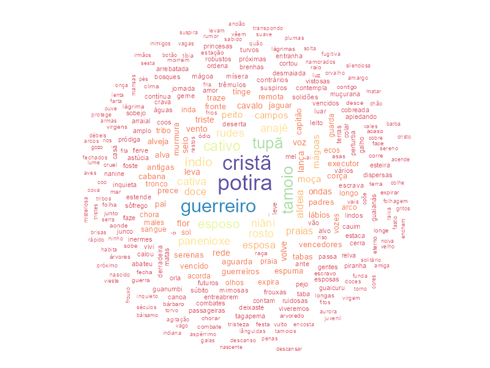

A linguística, enquanto ciência que estuda a linguagem, é tradicionalmente dividida em Fonética e fonologia, Morfologia, Sintaxe, Semântica e Pragmática. Este seminário investigará aspectos de quatro dessas subáreas:
A Morfologia se dedica à segmentação e desambiguação de textos em unidades linguísticas e suas variações (p.ex., número, gênero, classes gramaticais) adequadas para realizar o processamento dos conjuntos de dados.
A Sintaxe trata da ordenação das unidades linguísticas, de modo que se expresse o significado esperado.
A Semântica lida com o significado das unidades (lexical) e expressões (composicional) que agrupam as unidades.
Pragmática considera os efeitos do contexto para desambiguar o significado de expressões.
A vertente computacional da linguística, especialmente por meio do processamento de linguagem natural (Natural Language Processing ou NLP), se dedica ao desenvolvimento de aplicações computacionais envolvendo aquelas subáreas.
A hipótese distribucionalista, como proposta por Zellig Harris (1954), será utilizada para ilustrar aspectos da face quantitativa da linguagem. A revisão de Alessandro Lenci (2017) inclui aspectos históricos e técnicos da discussão.
Para fins de ilustração, utilizaremos uma coleção de textos de Machado de Assis, publicados entre 1870 e 1879. O acesso a este corpus foi facilitado para as demonstrações a seguir, mas realizaremos o processo completo de obtenção dos corpora completos de Machado de Assis na aula 04.
2. Medidas e representações discretas
O matemático francês Gustav Herdan (1962) argumentou que, do ponto de vista estatístico, a fala (e seus registros) é uma amostra da língua, que seria a população. Como consequência, haveria condicionantes para o uso da língua pelos indivíduos que poderiam ser identificadas por meio de análises de natureza quantitativa.
Harris (1954) especificou as bases e uma proposta de método estruturalista e distribucionalista da linguagem. Os slides apresentados durante a aula destacam aspectos relevantes do artigo e ilustram suas aplicações à análise de dados textuais.
2.1 Morfologia
O estudo morfológico de conjuntos de texto se inicia pela normalização, que visa uniformizá-los para tornar o processamento mais conveniente. Os resultados da normalização incluem a contagem de palavras, expressões, sentenças e a identificação de radicais de palavras.
A normalização procede por quatro etapas:
Tokenização: distingue unidades linguísticas de textos (tokens), tendo a palavra como escolha mais frequente;
Tokenização de sentenças: distinção de combinações de tokens para análise;
Lematização: trata as unidades linguísticas de modo a selecionar formas convencionadas (dicionarizadas) — lemas;
Radicalização: redução das unidades linguísticas ao morfema básico.
Tokenização
A tokenização é a tarefa mais importante da normalização de texto, geralmente compreendendo o passo inicial da preparação de todos os modelos de linguística computacional, inclusive os modelos de linguagem de larga escala utilizados nas inteligências artificiais generativas.
Considere os cinco primeiro versos da primeira estrofe de “Potira”, de Machado de Assis (1875):
Moça cristã das solidões antigas,
Em que áurea folha reviveu teu nome?
Nem o eco das matas seculares,
Nem a voz das sonoras cachoeiras,
O transmitiu aos séculos futuros.
O código abaixo carrega um arquivo de texto e atribui seu conteúdo à variável potira. O processo é diferente daquele visto na aula passada, pois depende da abertura de um fluxo de dados.
# abre fluxo de dados de leiturafluxo <-file("potira.txt",open="r")# lê as linhas para o vetor 'potira'potira <-readLines(fluxo)# fecha fluxoclose(fluxo)# exibe versos (linhas 9 a 13)versos <- potira[9:13]print(versos)
[1] "Moça cristã das solidões antigas,"
[2] "Em que áurea folha reviveu teu nome?"
[3] "Nem o eco das matas seculares,"
[4] "Nem a voz das sonoras cachoeiras,"
[5] "O transmitiu aos séculos futuros."
O processo de tokenização pressupõe algum critério para a definição das unidades linguísticas em um dado idioma.
O pacote stringr, por meio da função str_split(), pode tokenizar conjuntos de texto por diversos critérios:
# instala e carrega o pacoteinstall.packages('stringr')library(stringr)
Warning: package ‘stringr’ is in use and will not be installed
O critério mais simples é o espaço entre as unidades.
# tokeniza o vetor verso por espaçosstr_split(versos, " ", simplify =TRUE)
Há diversos problemas com a tokenização baseada em espaços:
Espaços vazios são transformados em tokens;
Sinais de pontuação estão combinados às unidades, como em antigas,, cachoeiras, e futuros.
Expressões regulares são sequências de caracteres que definem padrões de busca mais robustos que separadores simples e aprimoram o processo de tokenização. A função boundary() identifica limites do tipo character (caractere), line_break (quebra de linha), sentence (sentença) e word (palavra).
# tokeniza pelos limites da palavra# str_split() retorna uma lista e unlist() transforma em vetortokens <-unlist(str_split(versos,boundary('word')))print(tokens)
A estrofe produziu 26 tokens, sendo alguns repetidos. Podemos gerar a frequência deles com a função table(), já conhecida:
# total de tokens únicosprint(paste("Total de tokens:",length(tokens),"/ total de tokens únicos:",length(unique(tokens))))# calcula a ocorrência dos tokenstable(tokens)
[1] "Total de tokens: 29 / total de tokens únicos: 26"
tokens
a antigas aos áurea cachoeiras cristã das
1 1 1 1 1 1 3
eco Em folha futuros matas Moça Nem
1 1 1 1 1 1 2
nome o O que reviveu seculares séculos
1 1 1 1 1 1 1
solidões sonoras teu transmitiu voz
1 1 1 1 1
A tabela indica a ocorrência de três (3) tokens das e dois (2) tokens Nem, explicando a diferença entre o total de ocorrências e o total de tokens.
Dica: denominamos vocabulário o conjunto de tokens identificados em dados textuais.
Podemos refazer as operações com o poema completo, para analisar a distribuição de frequências dos tokens no vocabulário.
# tokeniza vetor completo do poematokens <-unlist(str_split(potira,boundary('word')))# informa a quantidade de tokensprint(paste("Total de tokens:",length(tokens),"/ total de tokens únicos:",length(unique(tokens))))# gera a tabela e exibe as 80 primeiras palavrashead(table(tokens),n=80)
[1] "Total de tokens: 4136 / total de tokens únicos: 1866"
A tabela gerada, com 1866 itens, indica alguns problemas que a normalização ainda precisa resolver. Variações do mesmo token são contabilizadas de modo independente, tais como alguma e algumas (variação de número), algumas e Algumas ou alguns e Alguns (diferença no uso da letra maiúscula). Essa padronização pode reduzir o número de itens e aprimorar a avaliação da distribuição.
As funções str_to_lower() e str_to_upper() transformam, respectivamente, os conjuntos de textos para letras minúsculas e maiúsculas. Assim, casos como Algumas e algumas seriam contabilizados conjuntamente.
# converte para minúsculastokens.minusculas <-str_to_lower(potira)# tokeniza vetor completo do poematokens.minusculas <-unlist(str_split(tokens.minusculas,boundary('word')))# informa a quantidade de tokensprint(paste("Total de tokens:",length(tokens.minusculas),"/ total de tokens únicos:",length(unique(tokens.minusculas))))# gera a tabela e exibe as 80 primeiras palavrashead(table(tokens.minusculas),n=80)
[1] "Total de tokens: 4136 / total de tokens únicos: 1679"
O ajuste reduziu a listagem em quase 200 tokens, reforçando a importância da normalização do texto antes da análise. Podemos prosseguir para formas mais avançadas de normalização.
Visualização da distribuição
A necessidade de normalização do corpus pode ser verificada por meio de dispositivos de informação como nuvens de palavras (word clouds).
Ferramentas online como Free Word Cloud Generator exibem tokens do vocabulário em tamanho proporcional à sua frequência no corpus, facilitando a avaliação da distribuição.

Nuvem de palavras do poema Potira.
A imagem, resultado do processo de copiar e colar o poema original na ferramenta, evidencia como as chamadas palavras de parada (stopwords) ou palavras vazias (empty words) podem prejudicar a análise.
Exceto por termos como “rosto”, “olhos”, “flor”, “vida”, as palavras representadas em maior não contribuem para a compreensão dos significados no texto.
A lista de tokens do vetor tokens.minusculas pode ser aprimorada pela remoção das palavras de parada, passando a fornecer indícios mais relevantes sobre a estrutura do texto. O pacote stopwords contém um dicionário com palavras de parada em vários idiomas, inclusive o português.
# instala e carrega pacoteinstall.packages('stopwords')library(stopwords)
Warning: package ‘stopwords’ is in use and will not be installed
Removeremos as palavras de parada de tokens.minusculas utilizando a função stopwords() com o argumento pt-br. Utilizamos, ademais, a função which() e o operador %in%, que verifica se um item pertence a um conjunto.
A variável remover contém os índices dos itens do vetor tokens.minusculas que também estão na lista das palavras de parada do português.
# lista de termos para removerremover <-which(tokens.minusculas %in%stopwords('pt'))# mostra a listaprint(remover)
Desse modo, podemos criar o novo vetor tokens.nuvem apenas com tokens não removidos da lista original.
# cria novo vetortokens.nuvem <- tokens.minusculas[-remover]# distribuição resultanteprint(paste("Total de tokens:",length(tokens.nuvem),"/ total de tokens únicos:",length(unique(tokens.nuvem))))
[1] "Total de tokens: 2509 / total de tokens únicos: 1572"
Obtivemos 100 tokens a menos, sendo que a frequência total caiu em 1627 ocorrências. Isto significa que os termos removidos eram muito frequentes e não tinham papel relevante na construção do significado. Podemos visualizar o resultado em nuvens de palavras com o pacote wordcloud.
# instala e carrega pacoteinstall.packages('wordcloud')library(wordcloud)
Warning: package ‘wordcloud’ is in use and will not be installed
A função wordcloud() recebe dois argumentos: um vetor com a lista de palavras e outro com a frequência de cada palavra.
# converte vetor para data.frametokens.nuvem.df <-as.data.frame(table(tokens.nuvem))# remove margins para comportar a nuvempar(mar=c(0,0,0,0))# gera nuvemwordcloud(tokens.nuvem.df$tokens.nuvem, tokens.nuvem.df$Freq, colors=brewer.pal(8, "Spectral"),random.order=FALSE)

Podemos observar que a palavra de frequência mais alta é “olhos”, seguida por “vida” e “mãos”, depois por “rosto”, “voz” e “amor”. As cores agrupam os termos com a mesma ocorrência, relevando aspectos quantitativos da estrutura do texto.
Se o resultado ainda não for satisfatório, podemos utilizar listas personalizadas de palavras de parada, refinadas de acordo com o nosso interesse.
# cria vetor com palavras que desejamos removerpalavras.de.parada <-c('é','la','tal','oh','aí','ai','ali','ó')# lista de termos para removerremover <-which(tokens.nuvem %in% palavras.de.parada)# removetokens.nuvem <- tokens.nuvem[-remover]# distribuição resultanteprint(paste("Total de tokens:",length(tokens.nuvem),"/ total de tokens únicos:",length(unique(tokens.nuvem))))
[1] "Total de tokens: 2477 / total de tokens únicos: 1565"
E geramos novamente o data.frame e o gráfico com as palavras de parada removidas:
# converte vetor para data.frame (novamente)tokens.nuvem.df <-as.data.frame(table(tokens.nuvem))# remove margins para comportar a nuvempar(mar=c(0,0,0,0))# gera nuvemwordcloud(tokens.nuvem.df$tokens.nuvem, tokens.nuvem.df$Freq, colors=brewer.pal(8, "Spectral"),random.order=FALSE)

Lematização e radicalização
A lematização transforma o corpus de modo que as variações das unidades linguísticas (lexemas) sejam substituídas representações canônicas (lemas), que não prejudicam o entendimento do texto.
Lexema
Lema
Raiz
algum, alguns, alguma, algumas
algum
algu_
A radicalização identifica o morfema básico da unidade, de modo a remover as variações morfológicas. Este processo retorna tokens ainda mais simples, reduzindo-os às suas formas sem variação de gênero, número, classe gramatical, tempo verbal etc.
O símbolo _ (sublinhado) na tabela delimita o radical e sua aplicação ao corpus consistiria na substituição de todos os lexemas pela forma reduzida. Qualquer outro símbolo pode ser selecionado para tal indicação.
O processo de lematização e radicalização deve partir da inspeção do vocabulário tratado. O código a seguir exporta o data.frame tokens.nuvem.df para que esta avaliação seja feita no Microsoft Excel.
Considerando o caso da raiz algu_, a inspeção da planilha gerada resultaria na seguinte situação:
token
frequência
alguma
1
algumas
2
alguns
1
algu_
4
A substituição de todas ocorrências de alguma, algumas e alguns por algu_ pode ser feita pelo próximo trecho de código. Note que retomamos o vetor original, com os dados brutos do poema, e reaplicamos todas as transformações anteriores.
Dica: escolha bem o nome das variáveis em R, pois isso pode facilitar a reprodução de transformações e processamentos sequenciais dos dados.
# converte o vetor original para minúsculastokens.minusculas <-str_to_lower(potira)# substitui lexemas pelo radical algum*tokens.minusculas <-str_replace_all(tokens.minusculas, "\\balgu[:alpha:]*","algu_")# tokeniza vetor completo do poematokens.minusculas <-unlist(str_split(tokens.minusculas,boundary('word')))# lista de termos para removerremover <-which(tokens.minusculas %in%stopwords('pt'))# removetokens.nuvem <- tokens.minusculas[-remover]# converte vetor para data.frame (novamente)tokens.nuvem.df <-as.data.frame(table(tokens.nuvem))# informa a quantidade de ocorrências de algu_print(paste("Ocorrências de algu_:",length(which(str_detect(tokens.nuvem,"algu_")))))# remove margins para comportar a nuvempar(mar=c(0,0,0,0))# gera nuvemwordcloud(tokens.nuvem.df$tokens.nuvem, tokens.nuvem.df$Freq, colors=brewer.pal(8, "Spectral"),random.order=FALSE)
[1] "Ocorrências de algu_: 6"

2.2 Sintaxe
O nível mais simples de ordenação das unidades linguísticas envolve o respeito à sequência de tokens nas frases. A análise estritamente morfológica é baseada na técnica Bag of Words, que trata tokens de modo indiferenciado, sem considerar seus contextos de aparição e as possíveis relações com demais tokens.
Explorando n-grams
Para evoluir a análise, podemos tanto definir n-grams, que são composições de n unidades de interesse, como se fossem expressões que aparecem no vocabulário.
Dica: a análise morfológica oferece pistas de possíveis combinações de unidades em expressões.
Vamos verificar os contextos das palavras olhos (f=24):
str_detect() recebe o documento em que ocorrerá a busca e o padrão de busca;
O padrão de busca \\bpotira\\b significa que buscamos a palavra olhos, o que requer encapsulá-la entre os marcadores \\b;
O resultado de str_detect() é um vetor do tamanho de potira, indicando TRUE onde o padrão foi encontrado e FALSE onde não foi;
which() transforma o vetor de TRUE e FALSE nos índices de potira, permitindo que o vetor doc.olhos seja criado com as ocorrências.
# localiza 'olhos' nos documentosdoc.olhos <- potira[which(str_detect(potira,"\\bolhos\\b"))]# imprime resultadoprint(doc.olhos)
[1] "Quando a aldeia surgiu aos olhos torvos"
[2] "Nas veias ferve do índio. Os olhos luzem"
[3] "Da cativa gentil cerrados olhos"
[4] "Potira acorda, os olhos lança em torno,"
[5] "Do terrível tamoio os lindos olhos,"
[6] "Disse, e fitando no índio ávidos olhos,"
[7] "Crava os olhos no chão; lentas lhe saem"
[8] "Lágrimas lhe espremeu dos olhos negros"
[9] "Expirou de teu pai nos olhos tristes;"
[10] "Enquanto a vida alumiar meus olhos."
[11] "Da sua aldeia aos olhos espantados"
[12] "A graciosa fronte; os olhos fecha,"
[13] "Se, alguma vez, fugindo a estranhos olhos,"
[14] "De seus olhos azuis e alegres penas"
[15] "— “Pois que à taba voltaste, em que teus olhos"
[16] "Que há de acender nestes cansados olhos"
[17] "Não expirar aos olhos de outros homens;"
[18] "De olhos que amor venceu: — macia relva,"
[19] "Anajê crava nela os olhos turvos"
[20] "Os olhos. Foi desmaio de tristeza"
[21] "Que desvalia aos olhos teus me coube,"
[22] "Turvos olhos: “Perdôo-te!” murmura,"
A partir do novo vetor, podemos buscar ocorrências de olhos como antecedente ou consequente do bigram. Por exemplo:
Podemos refazer a limpeza do vetor, excluindo pontuação e palavras de parada, de modo a deixar apenas termos que contribuam para o significado de olhos no contexto.
# remove pontuaçãodoc.olhos <-str_replace_all(doc.olhos,"[:punct:]","")# transforma em caixa baixadoc.olhos <-str_to_lower(doc.olhos)# remove palavras de parada# obs: concatenamos stopwords com o símbolo de ou (|) e identificadores de palavra (\\b)doc.olhos <-str_replace_all(doc.olhos,str_c(str_c("\\b",stopwords("pt"),"\\b"),collapse="|"),"")# remove palavras de parada personalizadaspalavras.de.parada.olhos <-c("os","dos","de")# lista de termos para removerdoc.olhos <-str_replace_all(doc.olhos,str_c("\\b",palavras.de.parada.olhos,"\\b",collapse="|"),"")# remove espaços duplosdoc.olhos <-str_replace_all(doc.olhos,"\\s+"," ")# remove espaços no começodoc.olhos <-str_trim(doc.olhos,side="both")# imprime resultadoprint(doc.olhos)
A expressão regular para extrair a palavra olhos acompanhada de uma (01) palavra antes ou depois combina trechos utilizados anteriormente ao operador |, que significa “ou”:
# extrai x+olhos e olhos+xdoc.olhos <-unlist(str_extract_all(doc.olhos,"\\b[:alpha:]+\\b\\s\\bolhos\\b|\\bolhos\\b\\s\\b[:alpha:]+\\b"))print(doc.olhos)
Eventualmente, podemos avaliar que uma palavra adicional é insuficiente para avaliar o contexto de ocorrência de tokens de interesse. Podemos selecionar, por exemplo, uma janela mais ampla e incluir uma palavra antes e outra após aquela sob investigação.
O código a seguir refaz o percurso inteiro com este objetivo, gerando o vetor doc.olhos.tricom e sem palavras de parada para comparação:
# ---------------------------------# 1) com palavras de parada# ---------------------------------# localiza 'olhos' nos documentosdoc.olhos.tri <- potira[which(str_detect(potira,"\\bolhos\\b"))]# remove pontuaçãodoc.olhos.tri <-str_replace_all(doc.olhos.tri,"[:punct:]","")# transforma em caixa baixadoc.olhos.tri <-str_to_lower(doc.olhos.tri)# extrai janela x+olhos+ydoc.olhos.tri <-unlist(str_extract_all(doc.olhos.tri,"\\b[:alpha:]+\\b\\s\\bolhos\\b\\s\\b[:alpha:]+\\b"))print(doc.olhos.tri)
A inspeção da distribuição completa de frequências pode ajudar a identificar termos e sentenças que merecem investigação. No entanto, a revisão da literatura sobre o objeto de pesquisa e os resultados dos estudos anteriores podem sugerir palavras a serem exploradas.
Dica: Alguns temos parecem ser palavras de parada, mas podem ser modificadores de outras palavras efetivamente importantes, o que nos leva à composição de n-grams no vocabulário. Por exemplo, não transforma o contexto de ocorrência de termos como posso, devo , consigo e faço.
2.3 Semântica
De que modo a frequência de tokens nos documentos pode fornecer indícios sobre os temas de que tratam o conjunto de dados? Como vimos, a contagem de frequência de lexemas em sacos de palavras não permite considerar a sintaxe das sentenças, tampouco as relações entre tokens utilizados nos registros textuais.
A frequência relativa da palavra: tf
Em vez de realizar a contagem absoluta, o quociente entre a frequência de ocorrência total do termo no documento (f_{t,d}) e o total de termos que o documento emprega (\Sigma_{t'\in d}).
tf(t,d)=\frac{f_{t,d}}{\Sigma_{t'\in d}}
\tag{1}
Para exemplificar a computação desta medida, trataremos toda a coleção dos textos de Machado de Assis entre 1870 e 1879. Avaliaremos as medidas de cada termo do vocabulário completo da coleção, aplicando o processo pela normalização e limpeza dos poemas apresentado anteriormente.
# ajusta exibição de casas decimaisoptions(scipen=9999)# importa coleção de Machado de Assiscolecao <-read.xlsx("1870-1879.xlsx")# --------------------------------# limpeza e normalização dos dados# --------------------------------# remove pontuaçãocolecao$texto <-str_replace_all(colecao$texto,"[:punct:]"," ")# remove quebras de linhacolecao$texto <-str_replace_all(colecao$texto,"\\n"," ")# transforma para minúsculascolecao$texto <-str_to_lower(colecao$texto)# remove palavras de paradacolecao$texto <-str_replace_all(colecao$texto,str_c("\\b",stopwords('pt'),"\\b",collapse="|")," ")# remove espaços duplicadoscolecao$texto <-str_replace_all(colecao$texto,"\\s{1,}"," ")# remove espaços extras no início e finalcolecao$texto <-str_trim(colecao$texto,side="both")
O data.frame normalizado pode então ser transformado no vocabulário:
# tokeniza vetor completo colecao.tokens <-unique(unlist(str_split(colecao$texto,boundary('word'))))# informa a quantidade de tokensprint(paste("Total de tokens:",length(colecao.tokens)))
[1] "Total de tokens: 14362"
O denominador da equação 1 corresponde aos 14.362tokens únicos da coleção. Precisaremos calcular a frequência de cada termo em cada documento para completar os dados necessários para o cálculo da medida tf. Os resultados serão registrados no data.frame de nome txd (tokens x documentos).
A primeira coluna de txd registra o total de tokens no documento, para facilitar computações subsequentes. As colunas seguintes correspondem a todos os termos do vocabulário.
# cria data.frame de tokens x documentostxd <-as.data.frame(matrix(data=0,nrow=nrow(colecao),ncol=length(colecao.tokens)+1# total tokens do documento + frequência token/documento ))# define nomes das colunascolnames(txd) <-c("total.tokens",colecao.tokens)# define nomes das linhasrownames(txd) <-paste0("doc", # prefixoseq(1, # valor inicialnrow(colecao), # valor final1# incremento ))
A matrix txd é do tipo esparsa, uma vez que terá muitas células com valor zero, referentes aos documentos em que um dado termo não ocorre. A partir dela, criaremos a matriz txd.tf, que registrará a frequência relativa de cada token.
Dica: podemos aproveitar a estrutura de txd.tf para a matriz txd.tfidf que será explicada na próxima seção. A estrutura é exatamente a mesma, mas os valores armazenados são diferentes.
# cria data.frame para as medidas tf tokens x documentos# (primeira coluna com totais é desnecessária)txd.tf <- txd[,c(2:ncol(txd))]# aproveita estrutura para tf-idftxd.tfidf <- txd.tf
O trecho de código abaixo é responsável por contar as ocorrências de cada token por documento. Este processo tem quatro etapas principais:
Linha 4: atribuímos a doc.tokens a contagem total de tokens em documento a partir da tokenização realizada pela função str_split()
Linhas 10 a 17: freq.token registra a frequência de token em documento utilizando a função str_match_all()
Linha 19: registramos freq.token em txd
Linha 21: calculamos a frequência ponderada (tf) propriamente dita
Dica: o script a seguir é intensivo em processamento, podendo demorar cerca de 5 minutos para ser executado. Para evitar o tempo de espera, exporte a planilha resultante e a importe antes dos processamentos seguintes.
# contagem das frequênciasfor (documento in1:nrow(colecao)) {# total de tokens do documento doc.tokens <-length(unlist(str_split(colecao$texto[documento],boundary('word'))))# inclui na matriz txd$total.tokens[documento] <- doc.tokens# conta ocorrências de cada token no documentofor (token in colecao.tokens) {# computa freq.token <-length(unlist(str_match_all( colecao$texto[documento],str_c("\\b",token,"\\b") ) ) )# adiciona à df geral txd[documento,token] <- freq.token# computa tf txd.tf[documento,token] <- freq.token/doc.tokens }}# Visualiza txdView(txd)
A informação transmitida pela palavra quanto à coleção: idf
Ao considerarmos a coleção completa de documentos, podemos avaliar o quão rara ou comum uma palavra é.
O inverso da frequência nos documentos ou inverse document frequency (idf) é uma medida quantitativa da frequência N do termo t na coleção de documentos D, definida pelo logaritmo do quociente entre o total de documentos e o número de documentos que contêm o termo:
idf(t,D) = log\frac{N}{n_t}
\tag{2}
Assumindo que o termo está presente na coleção, o denominador {n_t} será diferente de zero. Criaremos uma nova matriz, denominada txd.idf para registrar os os resultados da equação 2.
Dica: o valor de idf é constante para cada termo na coleção de documentos, de modo que a matriz só terá uma única linha.
# cria data.frame para as medidas idf dos tokenstxd.idf <-as.data.frame(matrix(nrow=1,ncol=length(colecao.tokens),data=0))colnames(txd.idf) <- colecao.tokens
O cálculo de idf para os termos analisa quantas células das respectivas colunas têm valor maior que zero e atribui o resultado a nt (numerador da equação 2). Em seguida, computamos o logarítmo do quociente entre o número de documentos da coleção, obtido por nrow() e nt.
# laço por documentos e termosfor (coluna in colecao.tokens) {# conta ocorrências em todos os documentos nt <-length(which(txd[,coluna] >0))# calcula idf (somando 1 para evitar divisão por zero) idf <-log10(nrow(colecao)/nt)# adiciona ao df txd.idf[1,coluna] <- idf}# VisualizaView(txd.idf)
A medida da importância do termo: tf-idf
Finalmente, a medida tf-idf se refere à importância de tokens (t) em documentos (d) de uma coleção (D) a partir do produto entre a frequência do termo no documento quem estão (tf) e a frequência dele no conjunto de documentos (idf).
tfidf(t,d,D)=tf(t,d) \cdot idf(t,D)
\tag{3}
A equação 3 produz números grandes se a frequência do termo no documento for alta e a frequência dele na coleção for baixa. Pode-se entender tal relação como a capacidade do termo ser um bom indicador para um documento específico, em vez de estar disperso pela coleção.
A matriz esparsa txd.tfidf registra o resultado da multiplicação por documento e termo.
# calcula tf-idf por documentofor (documento in1:nrow(colecao)) {# calcula tf-idf do token no documentofor (coluna in colecao.tokens) {# tf-idf: idf(termo) * tf(documento,termo) txd.tfidf[documento,coluna] <- txd.idf[1,coluna] * txd.tf[documento,coluna] }}
O formato “tidy” para data.frames facilita a construção de visualizações pois reduz a quantidade de variáveis. Em vez de mantermos a matriz esparsa, transformamos cada termo no nível de uma coluna token, indicando o documento que ocorre e o valor tf-idf correspondente.
Ademais, é interessante gerar o ranking dos termos, isto é, ordená-los de acordo com o valor de tf-idf por documento. Isto facilita a visualização dos n termos mais relevantes para um documento ou para toda a coleção.

Visualização da coluna tf.idf para a criação de rankings.
# cria ranking dos tokenstxd.tidy$ranking <-NA# ordena com base em tf e token por documentofor (d in1:nrow(txd.tidy)) {# documento doc <- txd.tidy$doc[d] token.rankings <-order(txd.tidy[txd.tidy$doc==doc,]$tf.idf, decreasing =TRUE)# adiciona ordem ao data.frame txd.tidy[txd.tidy$doc==doc,]$ranking[token.rankings] <-1:nrow(txd.tidy[txd.tidy$doc==doc,])}
O pacote ggplot2 reúne funções para a geração de gráficos com base no formato tidy. A figura tem 23 painéis que correspondem a cada documento da coleção e a distribuição da medida tf-idf.
package ‘ggplot2’ successfully unpacked and MD5 sums checked
The downloaded binary packages are in
C:\Users\msn\AppData\Local\Temp\RtmpyyWmAN\downloaded_packages
Warning message:
package ‘ggplot2’ was built under R version 4.5.2
As seguintes funções geram o gráfico:
ggplot() inicializa o gráfico, recebendo txd.tidy como argumento. Isso expõe as variáveis do data.frame para a construção do gráfico;
geom_jitter() marca pontos no gráfico, tendo o ranking do termo no eixo X e tf-idf no eixo Y;
scale_x_log10() e scale_y_log10() definem a escala dos eixos para logarítmica de base 10;
xlab() e ylab() mudam os rótulos dos eixos e labs() define o título e subtítulo do gráfico;
facet_wrap() cria os painéis do gráfico, controlando pelos documentos (fórmula ~doc);
theme_minimal() seleciona o tema “minimal”, que é mais limpo e usa menos elementos gráficos.
# plota ranking x tf-idf por documentoggplot(txd.tidy) +geom_jitter(aes(x=ranking,y=tf.idf),alpha=0.2)+scale_x_log10()+scale_y_log10()+xlab("Ranking")+ylab("tf-idf")+labs(title="Distribuição de tokens",subtitle=paste0("N=",length(colecao.tokens)))+facet_wrap(~doc,ncol=5)+theme_minimal()

O conjunto dos painéis aproxima a distribuição proposta pela Lei de Zipf: a frequência de um termo é inversamente proporcional à sua ordem (ranking) no corpus. Os termos mais à esquerda do gráfico têm ordem baixa e tf-idf alto.
O gráfico da coleção completa oferece outra perspectiva sobre o efeito, acompanhado da reta de regressão em que tentamos predizer o ranking a partir da medida tf-idf.
# calcula regressãoprint(lm(log(ranking) ~log(tf.idf), data=txd.tidy))# plota ranking x tf-idf por documentoggplot(txd.tidy) +geom_abline(slope=-1.167,intercept =-1.305, colour="red", linetype=2)+geom_jitter(aes(x=ranking,y=tf.idf,colour=doc),alpha=0.5)+scale_x_log10()+scale_y_log10()+xlab("Ranking")+ylab("tf-idf")+labs(title="Distribuição de tokens",subtitle=paste0("N=",length(colecao.tokens)))+theme_minimal() +theme(legend.position="none")
Finalmente, a nuvem de palavras da coleção completa,baseada na medida tf-idf, sugere termos que parecem relevantes para entender todos os textos: “tomé”, “elisa”, “garcia”, “félix”, “estevão” e “mendonça” são nomes de personagens importantes para cada história.
# remove margins para comportar a nuvempar(mar=c(0,0,0,0))# nuvem de palavras por tf-idf para toda a coleçãowordcloud( txd.tidy$token, txd.tidy$tf.idf, colors=brewer.pal(8, "Spectral"),random.order=FALSE, min.freq =0.003# tf-idf mínimo (+/- 10º))

Já em relação a “Americanas”, livro que inclui o poema “Potira”, a nuvem tf-idf igualmente indica personagens, grupos ou entidades relevantes para as histórias.
# reparte matriz para documento 12 (Americanas)txd.doc1 <- txd.tidy[txd.tidy$doc=="doc12",]wordcloud( txd.doc1$token, txd.doc1$tf.idf,c(3,.5), # intervalo do tamanho das palavrascolors=brewer.pal(8, "Spectral"),random.order=FALSE, min.freq =0.0005# tf-idf mínimo (+/- 100º))

Finalmente, devemos exportar todos os dados gerados para facilitar seu reuso em notebooks futuros.
# exportação de todo o processo (descomente para exportar)#write.xlsx(txd,"./dados/txd.xlsx")#write.xlsx(txd.tf,"./dados/txd-tf.xlsx")#write.xlsx(txd.idf,"./dados/txd-idf.xlsx")#write.xlsx(txd.tfidf,"./dados/txd-tfidf.xlsx")#write.xlsx(txd.tidy,"./dados/txd-tidy.xlsx")
Atividade
Selecione entre cinco (5) e dez (10) obras da base 1870-1879.xlsx e realize as seguintes investigações:
Gere a nuvem de palavras de cada obra;
Calcule as métricas tf, idf e tf-idf;
Indique, a partir das métricas, quais tokens seriam mais importantes para cada obra.
Dica: o notebook aula-3-quanteda.ipynb exemplifica todas as operações necessárias para uma (1) obra, utilizando o pacote quanteda. Sua sintaxe é mais simples, embora menos explícita 😉. Em caso de dúvidas, consulte a documentação.